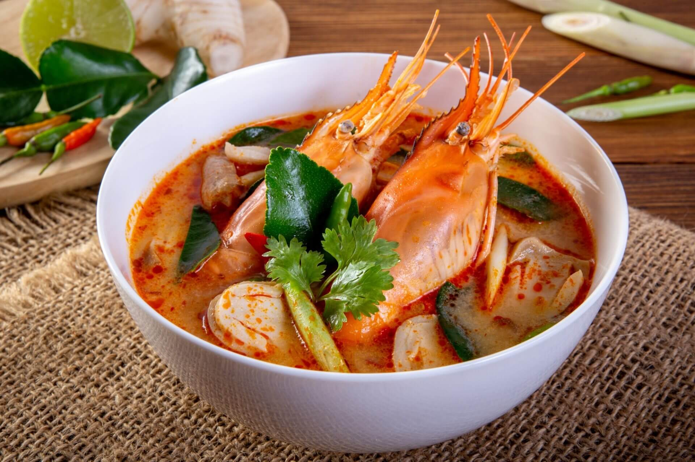

Descubra os Sabores da Tailândia
Tom Yum Goong: Uma Delícia Tailandesa Picante
Tom Yum Goong é uma sopa tailandesa clássica reconhecida por seus sabores marcantes e especiarias aromáticas. Esta sopa quente e azeda apresenta uma mistura tentadora de capim-limão, galanga e folhas de limão kaffir, combinadas com camarões suculentos.
"A chave para um Tom Yum Goong delicioso está no equilíbrio dos sabores – doce, azedo, salgado e picante."
- Chef Somchai, especialista em culinária tailandesa
Ingredientes:
- Capim-limão: 2 talos
- Manjericão tailandês: 1 xícara
- Folhas de limão kaffir: 3 folhas
- Camarão: 500g
Preparo:
- Deixe ferver o caldo por 10 minutos.
- Adicione capim-limão, galanga e folhas de limão kaffir.
- Misture os camarões e cozinhe até ficarem rosados.
- Tempere com molho de peixe, suco de limão e pasta de pimenta.
- Decore com manjericão tailandês e sirva quente.
Dicas de Cozimento:
- 1/4 de xícara de molho de peixe adiciona sabor tailandês autêntico.
- 1 colher de sopacol de pasta de pimenta dá à sopa seu calor característicopicante.

Detalhes da Receita
| Ingrediente |
Quantidade |
| Capim-limão |
2 talos |
| Manjericão tailandês |
1 xícara |
| Folhas de limão kaffir |
3 folhas |
| Camarão |
500g |
| Tempo de Preparo: 20 minutos |
| Sugestões de Servir: Sirva com arroz no vapor ou chá de jasmim. |